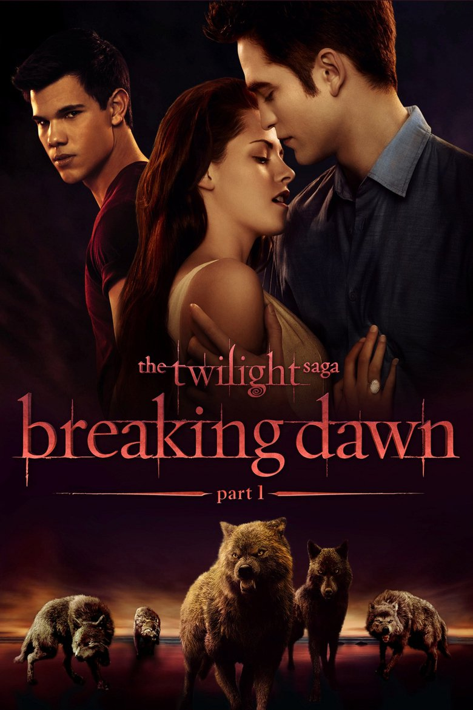
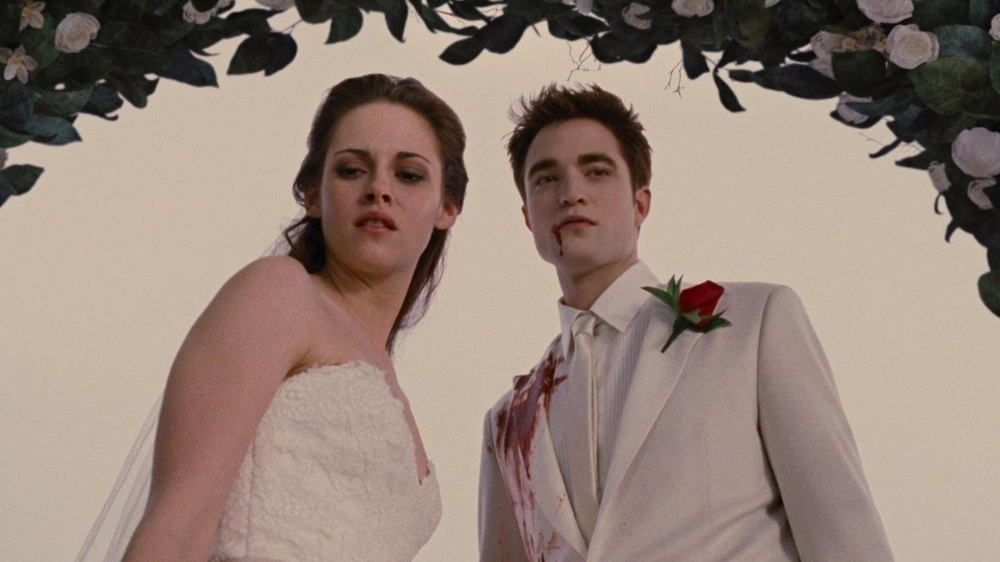
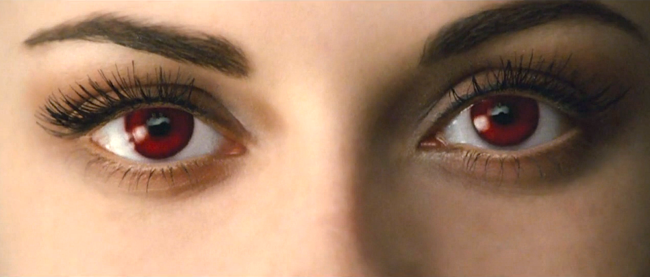
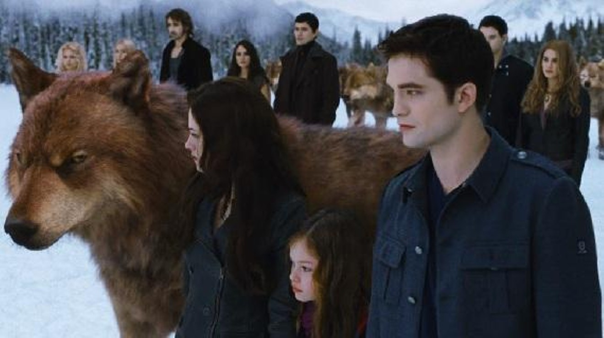

- Part one: Bella and Edward celebrate their wedding, but, after their honeymoon on Isle Esme, things take a turn for the worse when Bella realizes she is pregnant. As the baby grows at an abnormally fast rate and causes many health problems to Bella, Edward and the wolf pack fear that she may give birth to an immortal child. But the Cullens will do everything they can to ensure that both Bella and the unborn child remain safe.
- Part two:The final Twilight Saga begins with Bella now a vampire learning to use her abilities. And happy to see her daughter, Renesmee is flourishing. But when someone sees Renesmee do something that makes them think that she was turned. This person goes to the Volturi, because it is a violation to turn a child. And the penalty is death for both who turned the child into a vampire and the child, cause they deem a turned child too dangerous. Alice gets a vision of the Volturi coming after them. So the Cullens try to convince them that Renesmee is not a threat. So they ask friends and family to come stand with them. But when someone who has it in for the Volturi shows up and tells them they should be ready for a fight. And they get ready..
Breaking Dawn part 1 and 2


How did they film that?!?!?
According to John Rosengrant, the film's animatronics and special makeup effects supervisor, the idea behind the creation of the Bella replica doll was to make the birthing/near-death scene appear as real as possible and to show Bella in her very emaciated form that Meyer describes in the book.
MTVShowtime
Rotten Tomatoes and the Tomatometer score are the world's most trusted recommendation resources for quality entertainment. As the leading online aggregator of movie and TV show reviews from critics, we provide fans with a comprehensive guide to what's Fresh and what's Rotten in theaters and at home.
ShowtimeA24
A24 is an American independent entertainment company that specializes in film and television production, as well as film distribution.
A24